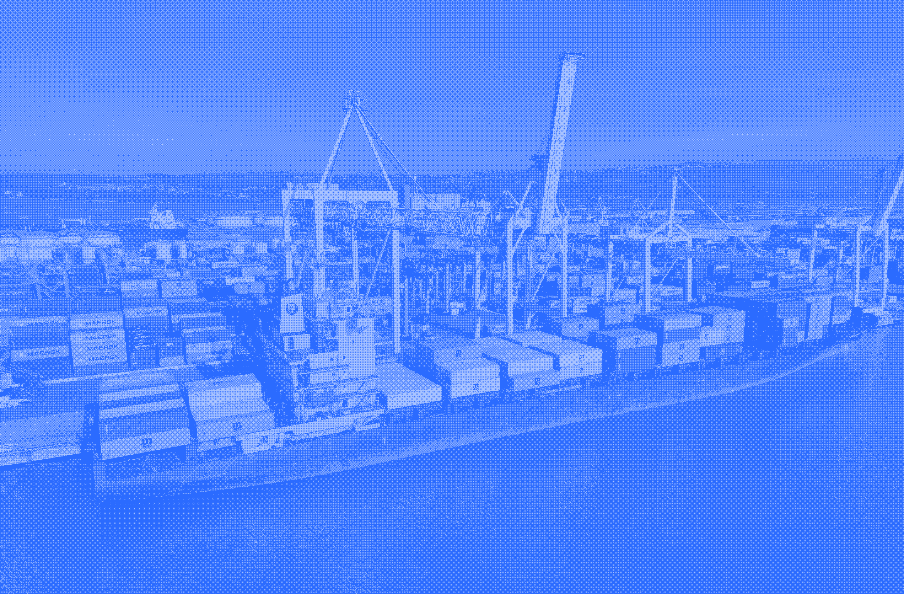

Collecte et lancement
01Kick-off, ports, routes, volumes, armateurs. Une heure de cadrage.
Chargeurs · MBFC

Nous, si.
La biodiversité, un atout
pour votre réputation.
Votre bilan carbone ne voit pas la mer : 82 % de votre empreinte biodiversité lui échappe. Agir renforce votre réputation, pour un coût et un effort minimum.
Trois livrables : matrice d’impacts biodiversité marine, critères biodiversité précis pour votre cahier des charges armateurs et vos commissionnaires, kit de reporting et communication.
Testé et approuvé auprès d’un leader du luxe, méthode fiable et auditable (SBTN, TNFD, CSRD, chiffres sourcés), quick-win (jusqu’à −90 % d’impact d’ici 2030) sans alourdir vos équipes.
Prix complet pour vos flux principaux, jusqu’à 5 routes et 3 armateurs. Au-delà, sur devis.
Eaux de ballast, bruit sous-marin, collisions avec les cétacés, rejets des épurateurs de fumées. Quand 80 % du commerce mondial en volume prend la mer.
Étude MBFC de référence, maison de luxe française, 2025 : 22 pressions évaluées, dont 17,7 % liées au climat. Commerce mondial : CNUCED.
Vos marchandises voyagent par la mer : bonne nouvelle pour le climat. Mais les navires qui les transportent déplacent aussi des espèces invasives, font du bruit sous-marin, croisent des cétacés et rejettent les eaux de lavage de leurs épurateurs de fumées.
Vous ne possédez pas les navires. Mais c’est vous qui les choisissez.
Répartition des 22 pressions, étude MBFC de référence (2025). Score d’impact relatif.
3 heures
3 semaines
Les actions
Pas de charge opérationnelle. Tous les bénéfices. Au moindre coût.
La matrice d’impacts
Le cahier des charges
Le kit de communication
Actualisation annuelle de l’analyse, à moindre coût.
Sensibilisation et formation biodiversité marine de vos équipes achats et RSE : 400 € HT la demi-journée.
Livré sur l’interface en ligne et en PDF. Chaque livrable téléchargeable en un clic, prêt à être utilisé.
Première semaine : collecte et lancement, chaîne de valeur. Deuxième semaine : 22 pressions, pondération. Troisième semaine : actions, restitution et arbitrage.
Kick-off, ports, routes, volumes, armateurs. Une heure de cadrage.
Corridors, hotspots, espèces menacées. Quinze minutes par mail.
Chacune notée sur 5 critères, par une méthode hybride : +50 articles, +15 bases de données.
Vos flux, vos volumes, vos armateurs, en EVP ou en tonnes.
Éviter, minimiser, transformer, restaurer : prêts à être intégrés sous forme de critères dans vos appels d’offres.
Résultats, choix des actions, feuille de route. Une heure de restitution.
Votre temps : 3 heures au total : 1 h de cadrage, 15 min par mail à chaque étape intermédiaire, 1 h de restitution
Remote ou sur site, en français ou en anglais
Un modèle perfectible et amélioré en continu. Chaque chiffre est sourcé et auditable.
Étude MBFC, 2025. Ordres de grandeur sur un score d’impact relatif.
Votre retour sur investissement : fidéliser vos clients, investisseurs et partenaires.
9 000 € HT, prix complet
Périmètre : vos flux principaux, jusqu’à 5 routes et 3 armateurs. Au-delà (ensemble des flux : amont, d’usine à usine) : sur devis.
laboratory at eco.systema est une bluetech fondée par deux entrepreneurs : l’un spécialiste du fret maritime et des sciences de l’environnement, l’autre en développement informatique et analyse de données.
CEO, Eco.Systema
CTO, Eco.Systema
L’océan couvre 71 % de la planète et porte l’essentiel du commerce mondial. Mais il reste l’angle mort des stratégies environnementales. Nous le faisons entrer dans vos politiques d’achat pour donner à vos clients, investisseurs et partenaires une raison de plus de vous rester fidèles.
Diagnostic live en 30 minutes sur vos propres routes. On en discute ?
Choisir un créneau avec Mathieu[LIEN AGENDA]